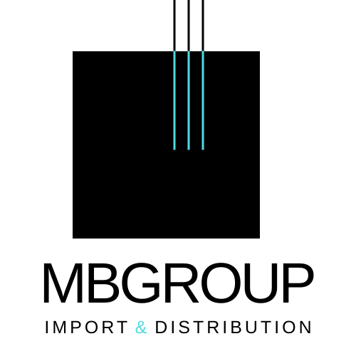
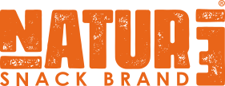
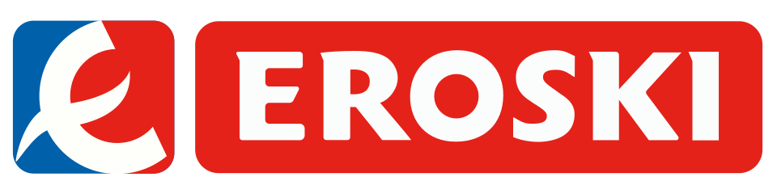
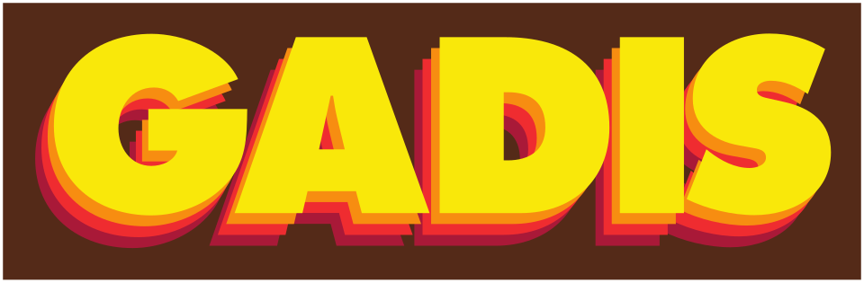

↗
Importación
y sourcing
Identificamos orígenes, proveedores y productos con potencial. Buscamos oportunidades donde calidad, demanda y viabilidad comercial se encuentran.
ORIGEN · PRODUCTO
Hablemos ↗Importamos, distribuimos y desarrollamos marcas de alimentación que conectan con el consumidor y crean nuevas oportunidades en el lineal.
.jpeg)
En MB Group unimos visión comercial, conocimiento del retail y experiencia internacional para detectar oportunidades reales en alimentación.
Leemos el mercado, identificamos necesidades del consumidor y conectamos origen, producto, marca y distribución. Con un objetivo: aportar valor a nuestros clientes y a las categorías donde competimos.
Así entendemos el negocioEl consumidor cambia. Sus necesidades también. Y el mercado no espera.
En MB Group detectamos tendencias, entendemos las nuevas demandas del consumidor y actuamos con agilidad para convertirlas en oportunidades reales. Conectamos origen, producto, marca y distribución para ayudar a nuestros clientes a adaptarse, diferenciarse y competir en un mercado que evoluciona cada día.
Una visión integral del negocio alimentario, desde la búsqueda del producto hasta su llegada al consumidor.
Identificamos orígenes, proveedores y productos con potencial. Buscamos oportunidades donde calidad, demanda y viabilidad comercial se encuentran.
ORIGEN · PRODUCTOConectamos productos y marcas con los canales adecuados, apoyándonos en la gestión comercial, la logística y el conocimiento de la distribución organizada.
RETAIL · OPERACIONESConvertimos insights de mercado en propuestas de valor, surtidos e identidades de marca que responden a las nuevas formas de consumir.
INSIGHTS · BRANDING.jpeg)
Natur3 nace de un cambio real: el que sus fundadores hicieron en su propia forma de alimentarse. Empezaron a elegir con más conciencia, a prestar atención a los ingredientes y a entender que comer mejor también forma parte de vivir con propósito. Hoy, esa filosofía se convierte en una marca de snacks y alimentos que apuesta por lo sencillo, lo auténtico y lo que aporta valor a cada día.

REAL FOOD PARA GENTE CON PROPÓSITOPrimero escuchamos al mercado. Analizamos categorías, tendencias y oportunidades antes de decidir qué desarrollar.
Entender los hábitos, valores y necesidades de las personas es el punto de partida de cada propuesta.
Buscamos propuestas que conecten con el consumidor y aporten valor comercial a nuestros clientes.
 Carrefour
Carrefour
Eroski Vegalsa
Vegalsa Lupa
Lupa Ahorramás
Ahorramás
Gadisa HiperDino
HiperDinoDetectamos oportunidades, desarrollamos productos y conectamos marcas con el consumidor. Si buscas propuestas que aporten diferenciación a tu surtido y respondan a las nuevas demandas del mercado, hablemos. En MB Group convertimos tendencias en oportunidades reales para la gran distribución.
Descubramos la próxima oportunidad